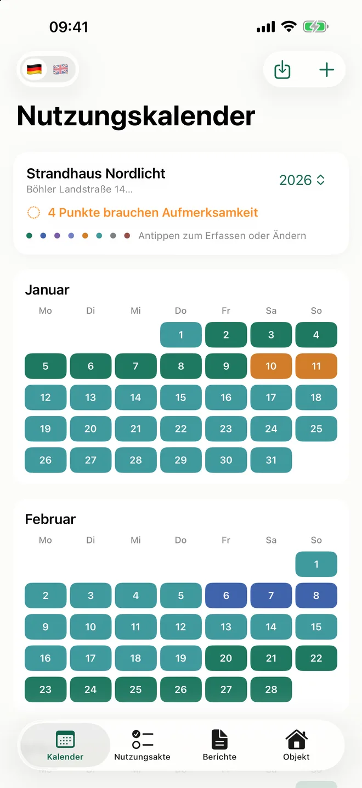

Ferienwohnung
Halten Sie Tag für Tag fest, wie Ihre Ferienwohnung im Steuerjahr tatsächlich genutzt wurde: vermietet, selbst genutzt, instand gehalten oder leer. Mit den Belegen am Zeitraum, den Tageszahlen für die Anlage V-FeWo und einem Bericht, den Sie Ihrer Steuerberatung übergeben.
Erscheint in Kürze im App Store für iPhone und iPad.

Jeder Tag des Jahres, eingeordnet solange er frisch ist.
Tippen Sie auf einen Tag, wählen Sie die Nutzungsart und passen Sie Von und Bis an. Der Kalender färbt sich, und am Jahresende muss nichts mehr aus Buchungsportalen, Rechnungen und Erinnerung zusammengesucht werden.
- Vermietet
- Eigennutzung
- Familie / Freunde
- Für Eigennutzung vorgehalten
- Instandhaltung, Reinigung, Übergabe
- Zur Vermietung verfügbar
- Leerstand
- Nicht verfügbar
Zeiträume erfassen
Ein Zeitraum hat eine Nutzungsart, einen Anfang und ein Ende. Zu jeder Vermietung gehören Plattform und Buchungsreferenz, zu jedem Instandhaltungsaufenthalt der Anlass: Endreinigung, Schlüsselübergabe, Reparatur, Renovierung, Kontrolle oder Wartung.
Kalenderdateien importieren
Lesen Sie die Kalenderdatei (.ics) Ihrer Buchungsplattform ein. Die gefundenen Zeiträume erscheinen als Vorschlag und werden erst übernommen, wenn Sie sie bestätigen.
Belege am Zeitraum
Buchungsabrechnungen, Auszahlungsbelege, Handwerkerrechnungen und Fotos liegen direkt bei dem Zeitraum, zu dem sie gehören – nicht in einem Ordner, den am Ende niemand mehr zuordnen kann.
Die Tageszahlen, die das Formular abfragt – mit Herleitung.
Die Anlage V-FeWo fragt je Objekt nach den Tagen der Selbstnutzung, den Vermietungstagen, den Leerstandstagen und den ortsüblichen Vermietungstagen. Ferienwohnung fasst Ihre Nutzungsarten so zusammen und zeigt zu jeder Zahl, woraus sie besteht.
Tage der Selbstnutzung
Auch vorgehaltene Tage zählen hier, ob jemand da war oder nicht.
- Eigennutzung
- Familie / Freunde
- Für Eigennutzung vorgehalten
Vermietungstage
Jeder vermietete Tag, mit Plattform, Buchungsreferenz und Belegen.
- Vermietet
Leerstandstage
Instandhaltungsaufenthalte zählen hier mit und stehen im Bericht gesondert mit Anlass.
- Instandhaltung, Reinigung, Übergabe
- Zur Vermietung verfügbar
- Leerstand
- Nicht verfügbar
Ortsübliche Vermietungstage
Diese Zahl kommt nicht aus Ihrem Kalender. Tragen Sie sie mit ihrer Quelle ein, etwa der Jahresstatistik der örtlichen Tourismuszentrale. Sie steht dann im Bericht neben Ihren eigenen Vermietungstagen.
Die Zuordnung ist ein Vorschlag zur Prüfung. Wie ein Tag steuerlich zu behandeln ist, entscheidet Ihre Steuerberatung.
Sehen, was noch offen ist, bevor das Jahr vorbei ist.
Die Nutzungsakte führt das Steuerjahr zusammen und sagt Ihnen, was vor der Übergabe noch fehlt.
Offene Punkte
Nicht eingeordnete vergangene Tage, noch zu prüfende Beleglagen und fehlende Anlagedateien auf einen Blick.
Monatsprüfung
Haken Sie abgeschlossene Monate ab. Ändert sich später etwas an einem Monat, öffnet er sich wieder.
Übergabe
Jahres-PDF, CSV-Export des Nutzungsverlaufs und das Gesamtpaket mit Bericht, Tabelle und allen Anlagen in einer ZIP-Datei.
So sieht die Nutzungsakte als PDF aus.
Die Vorschau zeigt die erste Seite eines Jahresberichts mit fiktiven Daten. Der vollständige Bericht enthält:
- Überblick über alle Nutzungsarten des Jahres
- Angaben für die Anlage V-FeWo mit Herleitung
- Offene Punkte, sichtbar statt übergangen
- Chronologischen Nutzungsverlauf mit Instandhaltungsaufenthalten
- Verweise auf die hinterlegten Belege
Jede Version bleibt in der Berichtshistorie erhalten, und die App zeigt an, wenn sich Daten seit dem letzten Bericht geändert haben.

Erfassen ist kostenlos. Die Übergabe kaufen Sie je Steuerjahr.
Kostenlos
Download, Erfassung, Nutzungskalender, Belege, Nutzungsakte, Monatsprüfung und Sicherung – für jedes Steuerjahr und jede Ferienwohnung.
Einmaliger Kauf je Steuerjahr
Schaltet für dieses Steuerjahr das Jahres-PDF mit Berichtshistorie, den CSV-Export und das Gesamtpaket frei, ab dem Steuerjahr 2026. Kein Abo. Ihre Daten bleiben erhalten – mit und ohne Kauf.
Kein Konto und keine Daten bei Mathricks.
Auf Ihrem Gerät gespeichert
Objekte, Nutzungszeiträume, Belege und Berichte liegen im geschützten App-Speicher Ihres iPhone oder iPad. Die App funktioniert offline und enthält keine Werbung und kein Tracking. Eine Sicherung in Ihrer eigenen iCloud ist optional: Sie bleibt ausgeschaltet, bis Sie sie einschalten, und lässt sich jederzeit abschalten und löschen.
Dokumentation, keine Steuerberatung
Ferienwohnung dokumentiert die tatsächliche Nutzung. Die App erstellt keine Steuererklärung, übermittelt nichts an das Finanzamt und ersetzt keine Steuerberatung.
Fragen zu Erfassung, Import, Bericht oder Datenschutz?
Ferienwohnung erscheint in Kürze im App Store für iPhone und iPad. Auf den Hilfe- und Datenschutzseiten finden Sie Kontaktmöglichkeiten und Informationen zur Datenverarbeitung.